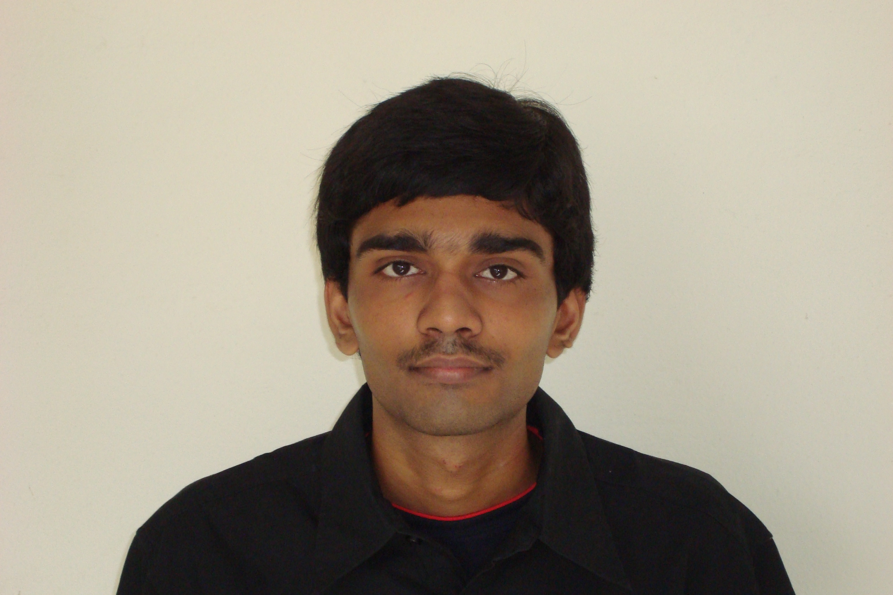
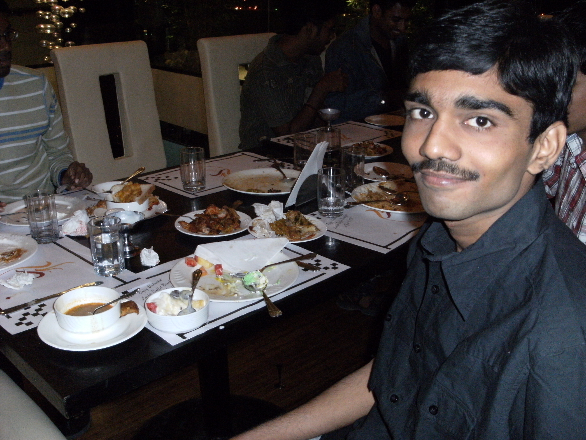

The Yearbook - Commemorating 2005-09!
Ravi Chandra's profile information
Name - Ravi ChandraBirthday - 13-09-1988
Email - matrixravi@gmail.com
Address - Rajahmundry
Phone - 9052551445
Webpage - Link
Hobbies - Table Tennis, TV shows blah blah blah ....
WishList - IAS IPS lantivi kakunda inka vere emaina
Memorabilia - My first birth day in IIIT
What would you want to be remembered as - I'd like to be remembed as a good friend to you all. And I know you'll definitely remember me as 'mokka' .
Future Plans - I never think of the future. It comes soon enough.
Testimonials written to Ravi Chandra
Ravi Chandra's Album

Default caption

{kind=link}
Default caption

{kind=link}
Default caption
Testimonials
For Nagarjuna Pavan Kumar GNagarjuna
iiit sirivennela fans association president
(orkut community moderator kuda)
konni vandalaki paiga patalaki lyrics tane swayam ga rasukunnadu.
hats off to your love towards telugu language ra

(ee vakyanni telugu lo raste bagundedemo
 )
)
anni rakala discussions lo active ga untadu.
cricket,basket ball, tt
baga adathadu
ippatike chala sarlu gelichavu kadara naa meeda

inka quant ayite veedi speed ki
nenu kuda maths bagane chestha kanee antha speed kadu.
english lo kuda keka.
manamandaram future lo cat kummesi oke iim lo join kavalani korukuntunna.
Best wishes for your future and future business
(I'm in)
-ravichandra (nenevaro cheppukondi chuddam)
For Md Abdul Azeem
Azeem O Shaan Shahenshah!
first year ninchi memiddaram zigree dosth lam (seats pakkapakkane)
inko pakka ninchi oka item gadu nannu chikaku peduthoo unde vadu, ee pakkana veedu undatam pedda relief.veedi matalaku eppudaina navvu vachestundi.
memimddaram house m.d. fans. oka house quote
"People choose the paths that grant them the greatest rewards for the least amount of effort."
manam house ni follow ayi kummeddam ra...
veedi gaming prowess gurinchi andarikee telisinde
Dx57Nebula ante adi posukune vallu janalu.
m3ssi3r 101 4th year lo dota meeda padi adukunnadu.gaming gurinchi articles kuda rasadu.
dell gaming division ki head ayipothadani maa aasa.arey nako dell gaming pc kavali.
eppudu pizza anna ready.veedi timings na timings chalavaraku match avuthai.oka roju nidra poyi midsem manesadu.(naku lage nidra moham batch member)
assalu kopam radu, visukkodu.emaina tittina comedy gane vuntundi.veedi titlu enni sarlu vinna routine anipinchavu.
arey nuvvu evvaremi cheppina boothulanu tagginchaku, ave nee trademark.
let's rock! yo yo!
- ravichandra (adi nene)
For Purushotham
azeem,nenu,veedu oka pizza batch
For Purushotham
last ninchi 7th line lo oka bracket miss ayyindani teliyajesukuntunna
For Purushotham
Kasiski Porus!
(venkaiah sir punyama ani kasiski mahanubhavudi gurinchi crypto lo telusukunna. venkaiah sir ki oka
 )
)
ikkada 2nd year daka veedu nbh ka bachcha gane telusu kanee pedda parichayam ledu
kanee 3rd year ninchi memiddaram maanchi close...
adanna mata
veedi lo chala kalalu vunnayi
karnataka sangeetha priyudu
(violin viragateestadani andarikee telisina vishayame)
amarasilpi jakkana laga flickr lo eppudoo
guduloo gopuraloo vati vaastu (architecture) ni
chusi anandapadutuntadu.
puravastu sastravetha (archaeologist)ga ippatike konni old coins collect chesadu.
nuvvu keka ra
 nee antha different and great taste unnavallani chala takkuva mandini chusanu.
nee antha different and great taste unnavallani chala takkuva mandini chusanu.
veedu class ki lepakapothe na pani govinda govinda
veediki chala patience ekkuva, naku kopam ekkuva (ado different angle lendi)
chala sarlu veedini anavasaram ga visukkunna palleththu mata kuda analedu.
kakapothe okasari mathram students account ninchi oka mail kottadu. (arey oka mata cheppadaniki antha podugu mail avasarama).
avathala nenu annanni anavasarapu matalu matladthunte nuvvu matladakapovatam tho naku marintha kopam vachindi.
nee tappu lenappudu ledu ani cheppadaniki eppudoo sankochinchaku.lokamantha na lanti items tho nindipoyindi.evadu eppudu ela react avuthado telidu.
manchithananni chethaganithanam anukuntaru jagratha.
tamil tambi laga lungi kattukoni iiit lo chusindi veedine
repu farewell lo pancha kattukoni 'ayyaaaaaa..' ani speech iddamani plan vestunnadu mari ee kadapa zilla muddubidda (idi nijamavvalani korukuntunna)
nee future partner gurinchi nee opinion naku nachaledu (nee personal matter anuko, adi vere vishayam)
nakem nachaledo nanne adugu cheptha
adento nenevarikee cheppanu le)
annattu nee notebooks ni diary of Mr.Purushotham
ane name tho publish cheyalani vundi.
(what an idea sirjee?
 )
)
'A circle is round. It has no end. That's how long I want to be your friend'
(quote copy kottina this is true)
-ravichandra(adi nene)
For Satish Varagani
abhinava alluri
anna gari atiradha abhimani
...........................
ila rasukuntoo pote enni rayalo telinanni vishayalu vunnayi satish gurinchi
ntr, inka tarak(ade jr. ntr) fan ante veedu telugu desam party veerabhimani anukunna modatlo
kani veedi support eppatikee cpm ke
deeni batti veedu rebel star krishnam raju lanti vadani arthamaindi

veedu manchi vaktha
(adento teliyani vallu jump jilani cheyandi)
IIIT mula purushudaina pranav chetha
'ee abbaye naa uddesyam lo first'
ani oka telugu eloctution lo anipinchukunnadante satti range ento artham chesukondi
'IIIT is a premier research institute' ani peru prakhyatulu sampadinchadam lo veedidi kuda kontha kutra vundi
manamandaram 10th lone graph books vadileste veedu
engineering lo kuda vatini vadalakunda colours kuda vesi
research papers publish chesadu
movies, politics, cat, rj, antyakshari, flash Games, cards, tt
brief ga adee story maa iddaridi
nako doubt - nee valla ibibo vadiki entha padindi .....?

(aa kathanu satish e vivarinchalsindi ga manavi)
'oka chinni navve navvi yuddhalenno apochchu'
satish nee navvu chuste naku nijamenemo anipistundi
nuvvu eppudoo alage navvutoo vundalani korukuntoo
-mokka
anabade
ravichandra